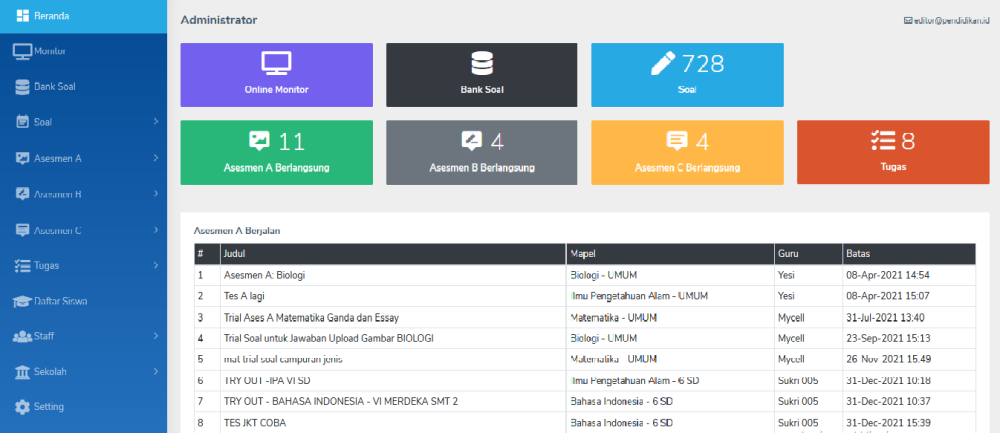
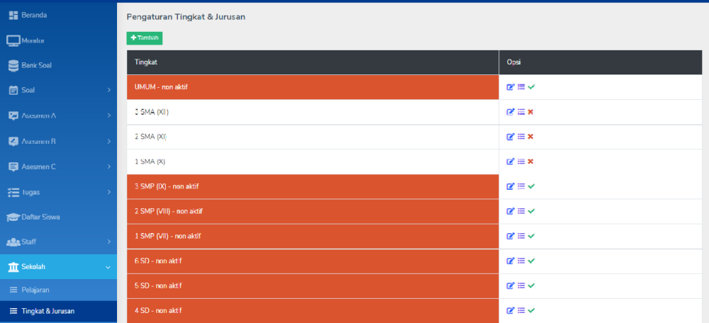
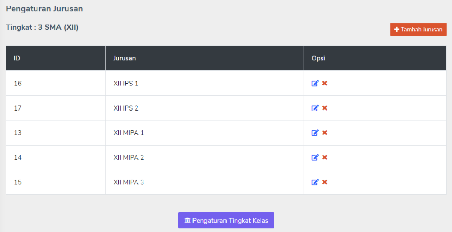
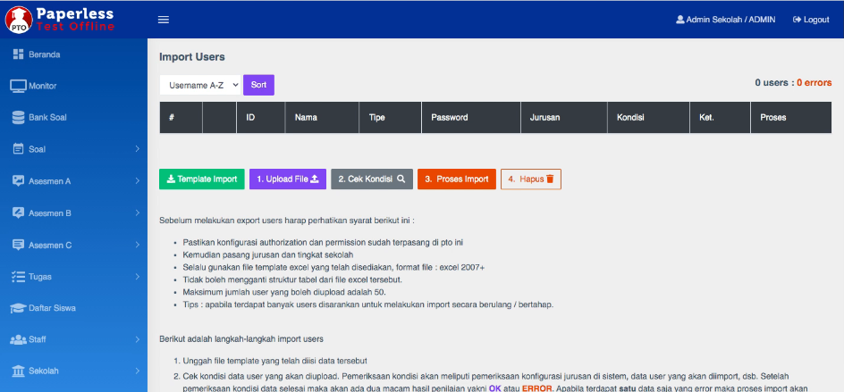

Pengaturan dasar.
Semua pengaturan dasar ini dilakukan oleh Admin.
Login Administrator
Administrator (selanjutnya disebut Admin) dapat melakukan pengaturan tertentu pada PTO. Akun untuk Admin adalah akun khusus yang disediakan oleh sistem. Untk mengakses Dashboard Admin cukup melakukan login pada halaman login seperti user-user lainnya.
- Pastikan untuk logout semua akun.
- Akses halaman PTO.
- Login menggunakan akun Admin.
Note
Default akun:
user: adminsekolah
password: admin123

Pengaturan kelas dan jurusan.

- Klik menu Sekolah.
- Pada submenu Sekolah, klik Tingkat & Jurusan.
- Dalam daftar Tingkat (kelas).
- Tambah: untuk menambah tingkat atau kelas baru.
- Edit: untuk mengubah judul Tingkat
- Jurusan: pengaturan jurusan
- Aktif-Non-aktif: untuk mengaktifkan (warna putih) atau menon-aktifkan (warna oranye).
- Ketika klik Jurusan pada masing Tingkat dapat ditambahkan Jurusan pada tingkat tersebut.

Input data user.
- Login menggunakan akun Admin.
-
Klik menu Import users.

-
Tersedia template yang dapat digunakan untuk import user secara bulk. Silakan unduh template tersebut.
- Dalam template tersebut terdapat contoh data berupa kolom-kolom yang harus diisi dengan data user.
- Buka hasil unduhan template. Hapus contoh data dan masukkan data sesuai kebutuhan yang terdiri dari:
- Nomor urut (maksimal jumlah data 300 user)
- Username
- Password
- Nama
- Type (student / teacher)
- Jurusan (dapat dikosongi jika type user adalah guru) dan harus sesuai dengan jurusan yang telah dibuat di PTO.
- Kembali ke menu Import user, klik Upload File. Pada dialog Upload user;
- Isikan jumlah user sesuai pada file template yang akan diunggah.
- Pilih file template yang tersimpan dan sudah terisi dengan user-user baru.
- Klik Submit.
- Semua daftar yang telah diinput di dalam file template akan muncul.
- Klik Cek Kondisi
- Pastikan kolom Kondisi terisi OK semua.
- Klik Proses Import.
Warning
Jika kolom kondisi tidak OK, maka ada yang tidak beres pada isian template.
Pengaturan mata pelajaran.
- Klik menu Sekolah.
- Pada submenu Sekolah, klik Pelajaran.
- Klik Tambah pelajaran untuk menambahkan pelajaran baru.
- Pada masing-masing pelajaran dapat diubah atau di-non-aktifkan.